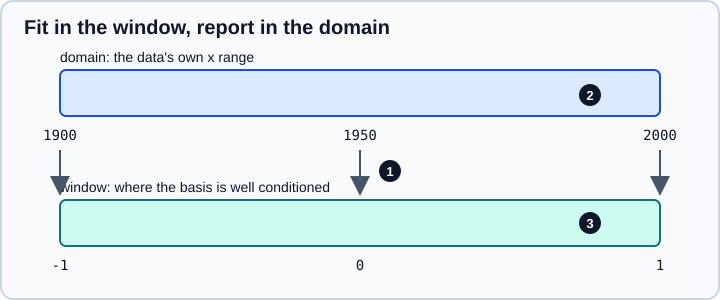

Polynomials
|
This content was generated with the assistance of AI and should be verified against the official documentation before being relied on in production. |
Polynomials appear in data science as trend lines, smoothing curves, calibration functions, feature expansions and
interpolants. NumPy offers two separate APIs for them. The older one is a handful of functions and the poly1d class
that store coefficients from the highest power down. The newer one is the numpy.polynomial package, whose classes
store coefficients from the constant term up, work in several bases, and fit in a rescaled coordinate system that
keeps the numerics healthy. The official guide recommends the package for new code and describes the older functions as
the "old polynomial API".
This page targets NumPy 2.5, as checked against the official documentation in October 2026. Examples target Python 3.13 or 3.14 and were run on Python 3.13. Every code block was run with NumPy 2.5.4 and the printed output is real. Related pages in this part: NumPy overview, Linear Algebra (least squares is what fitting solves), Statistics & Histograms and Migrating to NumPy 2.x. For a general regression workflow with validation, see Machine Learning Fundamentals and Model Evaluation & Validation.
Two APIs, two coefficient orders
The single most common source of polynomial bugs is the order of the coefficients, so fix it in your head first.
| API | Coefficients for 3x2 + 2x + 1 | Notes |
|---|---|---|
|
|
Current API. Also |
|
|
Legacy API. Still works, not recommended for new code. |
Source: NumPy manual: Polynomials
Every numpy.polynomial class prints its own repr, so a mix-up shows immediately. The legacy poly1d object reads
naturally when printed, but its .coeffs array is easy to misread, and a coefficient list copied between the two APIs
must be reversed.
import numpy as np
from numpy.polynomial import Polynomial
p = Polynomial([1, 2, 3]) # 1 + 2x + 3x^2
print(p)
print(repr(p))
old = np.poly1d([3, 2, 1]) # the same polynomial, descending
print(old)
print(old.coeffs, old(2.0))
print(Polynomial(old.coeffs[::-1])) # convert legacy -> new by reversing1.0 + 2.0·x + 3.0·x² Polynomial([1., 2., 3.], domain=[-1., 1.], window=[-1., 1.], symbol='x') 2 3 x + 2 x + 1 [3 2 1] 17.0 1.0 + 2.0·x + 3.0·x²
Source: numpy.polynomial.polynomial.Polynomial and numpy.poly1d
The repr of a new-style polynomial also shows two interval attributes, the domain and the window. They are explained
in the fitting section below and are the reason the new API behaves better numerically.
The Polynomial class
Evaluating, combining and inspecting
A Polynomial is callable (a scalar or an array of x values), supports + - *, floor division //, remainder %,
divmod, and integer powers, and answers questions about itself.
q = Polynomial([0, 1]) # the polynomial x
print(p(2.0), p([0, 1, 2]))
print(p.coef, p.degree(), p.domain, p.window)
print(p + q)
print(p * q)
print(divmod(p, Polynomial([1, 1])))
print(p ** 2)17.0 [ 1. 6. 17.] [1. 2. 3.] 2 [-1. 1.] [-1. 1.] 1.0 + 3.0·x + 3.0·x² 0.0 + 1.0·x + 2.0·x² + 3.0·x³ (Polynomial([-1., 3.], domain=[-1., 1.], window=[-1., 1.], symbol='x'), Polynomial([2.], domain=[-1., 1.], window=[-1., 1.], symbol='x')) 1.0 + 4.0·x + 10.0·x² + 12.0·x³ + 9.0·x⁴
Arithmetic between polynomials requires matching domain and window; mixing a polynomial with a scalar is always
allowed. Operating on polynomials of different classes (for example a Polynomial and a Chebyshev) raises
TypeError; convert one first with cast or convert(kind=...).
Useful members: .degree(), .trim() (drop trailing near-zero coefficients, as in Polynomial([1, 2, 0, 0]).trim()),
.truncate(size) (keep the first size coefficients), .copy(), .linspace(n) (n sample points of the curve),
Polynomial.basis(k) (the k-th basis function), Polynomial.identity() and Polynomial.fromroots(roots).
Calculus and roots
print(p.deriv())
print(p.integ()) # constant of integration k=0
print(p.integ(k=5)) # choose the constant
print(p.integ(lbnd=1)) # integral that is zero at x=1
print(p.roots())
r = Polynomial.fromroots([1, 2, 3])
print(r, r.coef)
print(Polynomial([1, 0, -1]).roots(), Polynomial([1, 0, 1]).roots())2.0 + 6.0·x 0.0 + 1.0·x + 1.0·x² + 1.0·x³ 5.0 + 1.0·x + 1.0·x² + 1.0·x³ -3.0 + 1.0·x + 1.0·x² + 1.0·x³ [-0.33333333-0.47140452j -0.33333333+0.47140452j] -6.0 + 11.0·x - 6.0·x² + 1.0·x³ [-6. 11. -6. 1.] [-1. 1.] [0.-1.j 0.+1.j]
Source: Polynomial.integ and Polynomial.roots
roots() returns the eigenvalues of the companion matrix, so the result is complex when the polynomial has complex
roots and it is only as accurate as that eigenvalue problem; roots of high-degree polynomials with clustered roots
are very sensitive to tiny coefficient changes. Do not use root finding as a numerical method for degree above a
few tens.
Fitting with Polynomial.fit
Polynomial.fit(x, y, deg) is the class method that performs a least-squares polynomial fit and returns a
Polynomial object. The key difference from the legacy polyfit is that, unless you say otherwise, it first maps the
data interval onto the window [-1, 1] and fits in that coordinate. The returned object remembers the mapping in its
domain and window.
import numpy as np
from numpy.polynomial import Polynomial
np.set_printoptions(precision=6, suppress=True)
rng = np.random.default_rng(42)
x = np.linspace(1900, 2000, 11)
y = 5 + 0.002 * (x - 1950) ** 2 + rng.normal(0, 0.1, x.size)
fit = Polynomial.fit(x, y, deg=2)
print(fit)
print(fit.domain, fit.window)
print(fit.convert())
print(fit(1975.0), fit.convert()(1975.0))4.940944 + 0.004021·(-39.0 + 0.02x) + 5.091359·(-39.0 + 0.02x)² [1900. 2000.] [-1. 1.] 7748.741662 - 7.94244·x + 0.002037·x² 6.215794756163017 6.215794756161813
Source: Polynomial.fit

In the figure, marker 1 is the linear map u = -39.0 + 0.02x that appears in the printed polynomial, marker 2 is the
domain (the minimum and maximum of x by default) and marker 3 is the window. The printed form in terms of
(-39.0 + 0.02x) is the fitted polynomial in the window variable, and fit.convert() rewrites it as an ordinary
polynomial in x. Both evaluate to the same value up to rounding error.
Three rules follow:
-
Evaluate the fitted object directly; it applies the mapping for you. Read
.coefonly if you know it refers to the window variable. -
Call
.convert()before you export coefficients to another program or compare them with a textbook formula. Withdomain=[-1, 1]passed tofitthe mapping is the identity and the coefficients are already in terms ofx. -
The default mapping is derived from the data you fitted. A model fitted on
xin[1900, 2000]and then evaluated at 2100 is extrapolating, and polynomials extrapolate badly.
Why scaling matters: conditioning
Powers of numbers far from zero (19009 is about 1029) produce a design matrix whose columns are almost parallel, so the least-squares problem is ill-conditioned. The scaled fit avoids this, the unscaled one degrades.
import warnings
xs = np.linspace(1900, 2000, 50)
ys = np.sin((xs - 1900) / 15)
# legacy-style function in the power basis, no scaling
c_raw = np.polynomial.polynomial.polyfit(xs, ys, 9)
res = Polynomial.fit(xs, ys, 9)
print(np.max(np.abs(np.polynomial.polynomial.polyval(xs, c_raw) - ys)))
print(np.max(np.abs(res(xs) - ys)))
with warnings.catch_warnings(record=True) as w:
warnings.simplefilter("always")
np.polyfit(xs, ys, 12)
print([str(i.message) for i in w])0.01515108346939087 3.327195932664728e-05 ['Polyfit may be poorly conditioned']
Source: numpy.polynomial.polynomial.polyfit and numpy.polyfit
The first line is the error of the unscaled degree-9 fit on the training points, the second the error of the scaled
fit of the same degree: more than two orders of magnitude apart for the same data and the same method. (The unscaled
call also emits a RankWarning that the fit may be poorly conditioned, and the legacy polyfit warns the same way
at degree 12.) Another remedy is to centre the data yourself, as the x - 1950 in the data generator does.
Options
-
degis an integer, or a list of non-negative integers to fit only those terms. A list applies to the window variable: fitting1 + 0.5 x^2withdeg=[0, 2]and the default mapping returns a polynomial whose converted form has a non-zero linear term (26 - 5x + 0.5x^2on 0 to 10), unless you passdomain=[-1, 1], which returns1 + 0 x + 0.5 x^2. Use a list together withdomain=[-1, 1]when the sparsity is meant inx. -
w=supplies weights (for inverse-variance weighting the documentation says to usew[i] = 1/sigma(y[i])). -
domain=overrides the interval that is mapped, andwindow=the target interval. -
rcond=is the relative cut-off for small singular values, with a default based on the data length and the machine epsilon. -
full=Truealso returns diagnostic information: the sum of squared residuals, the rank of the scaled design matrix, its singular values andrcond.
fit2, (resid, rank, sv, rcond) = Polynomial.fit(x, y, 2, full=True)
print(resid, rank, sv, rcond)[0.080317] 3 [1.322699 1. 0.500468] 2.4424906541753444e-15
Source: Polynomial.fit
Other bases
The package also provides Chebyshev, Legendre, Hermite (physicists'), HermiteE (probabilists') and Laguerre,
all with the same interface, so everything above works unchanged except for what the coefficients mean. Chebyshev
and Legendre series are the best-behaved choices for approximating a function on a finite interval, and
Chebyshev.interpolate(func, deg) samples a function at Chebyshev points to build a near-minimax approximation.
from numpy.polynomial import Chebyshev
f = np.exp
cheb = Chebyshev.interpolate(f, deg=6, domain=[-1, 1])
t = np.linspace(-1, 1, 201)
print(np.max(np.abs(cheb(t) - f(t))))
print(cheb.coef)
print(Polynomial.cast(Chebyshev([1, 2, 3]))) # to the power basis
print(Chebyshev.cast(Polynomial([1, 2, 3]))) # and back3.6200882655990085e-06 [1.266066 1.130318 0.271495 0.044337 0.005474 0.000543 0.000045] -2.0 + 2.0·x + 6.0·x² 2.5 + 2.0·T₁(x) + 1.5·T₂(x)
Source: Chebyshev.interpolate
A degree-6 Chebyshev interpolant of exp on [-1, 1] is within about 3.6e-6 of the true function everywhere, and the
rapidly decaying coefficients show that the series has converged. Use .convert(kind=Polynomial) or cast to move
between bases, and keep in mind that conversion to the power basis re-introduces the conditioning issues for high
degree.
The legacy API
The functions below are still importable in NumPy 2.5 and are fine for quick work, especially on short scripts that must also run on older NumPy releases. They all take descending coefficients.
| Legacy | Modern equivalent |
|---|---|
|
|
|
|
|
|
|
|
|
|
|
|
|
|
Source: NumPy manual: Poly1d and Polynomials
c = np.polyfit([0, 1, 2], [1, 3, 7], 2)
print(c) # descending
print(np.polynomial.polynomial.polyfit([0, 1, 2], [1, 3, 7], 2)) # ascending
print(np.polyder([3, 2, 1]), np.polyint([3, 2, 1]))
print(np.polymul([1, 1], [1, -1]), np.polydiv([1, 0, -1], [1, 1]))
print(np.poly([1, 2, 3]))[1. 1. 1.] [1. 1. 1.] [6 2] [1. 1. 1. 0.] [ 1 0 -1] (array([ 1., -1.]), array([0.])) [ 1. -6. 11. -6.]
Source: numpy.polyfit
The two fit calls print the same numbers only because the data fit 1 + x + x^2 exactly, which is a palindromic list of
coefficients; on any other data the legacy result is the reverse of the new one. Prefer a non-symmetric check when you
migrate code. The legacy polyfit can also return the covariance matrix of the coefficients with cov=True, which the
class method does not offer. When a covariance matrix matters, fit in centred coordinates with np.polyfit or use
scipy.optimize.curve_fit or statsmodels, which report standard errors directly.
c, cov = np.polyfit(x - 1950, y, 2, cov=True)
print(c, np.sqrt(np.diag(cov)))[0.002037 0.00008 4.940944] [0.000034 0.000955 0.045638]
Source: numpy.polyfit
Choosing a polynomial degree, and when not to
-
A polynomial of degree
n - 1passes exactly throughnpoints; a high degree on noisy data fits the noise. Choose the degree by cross-validation or an information criterion, not by training error, as discussed in Model Evaluation & Validation. -
Polynomials extrapolate wildly. A degree-7 fit of one period of a sine on
[0, 1]evaluates to about15.8at1.5, where the sine is zero. -
For smooth functions on an interval use Chebyshev or Legendre bases; for data with local structure prefer splines (SciPy), smoothing (pandas rolling or LOWESS in statsmodels) or tree-based models.
-
For regression with several features, polynomial expansion belongs in a scikit-learn pipeline with
PolynomialFeaturesand a regularised linear model, so that scaling and validation are handled correctly; see Feature Engineering. -
The power basis becomes unusable at moderate degrees on unscaled data, which is the reason
Polynomial.fitscales.
Pitfalls and what changed
-
Coefficient order differs between
numpy.polynomial(ascending) andpoly1d/polyfit(descending). -
Polynomial.fitcoefficients are in the scaled window until you call.convert(). -
Matching
domainandwindoware required for arithmetic between polynomials, and different classes cannot be mixed. -
full=Truereturns a different shape of result than the plain call: a tuple of the polynomial and the diagnostics. -
Books and older tutorials show
np.polyfitandnp.poly1das the way to fit curves, usually without any warning about conditioning or about extrapolation; they still run, and the official guide now points to the package. -
Legacy functions are not deprecated for removal in the releases checked here, but the documentation labels them as the old API and new features are added only to
numpy.polynomial.